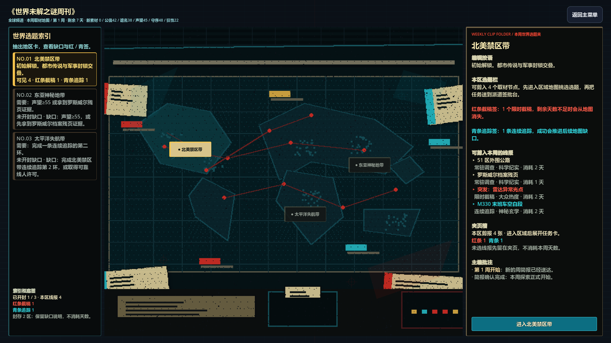
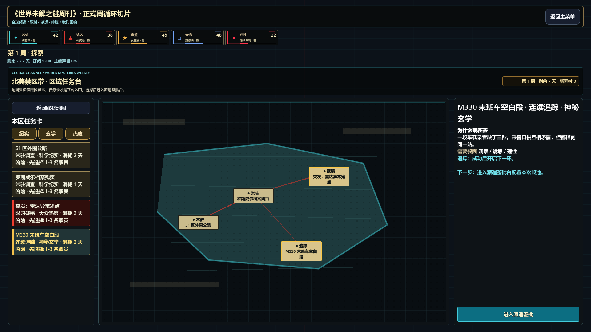

Godot 世界地图编辑部像素 v4 验收
桌面 16:9，1920 × 1080。重点验证：不再回退到旧简陋底图，中央地图和左右栏空区被编辑部物件与有效信息填充。
01 世界地图 / 区域选择

02 区域任务台

03 派遣签批台 / 连续追踪

04 派遣签批台 / 限时截稿

桌面 16:9，1920 × 1080。重点验证：不再回退到旧简陋底图，中央地图和左右栏空区被编辑部物件与有效信息填充。

